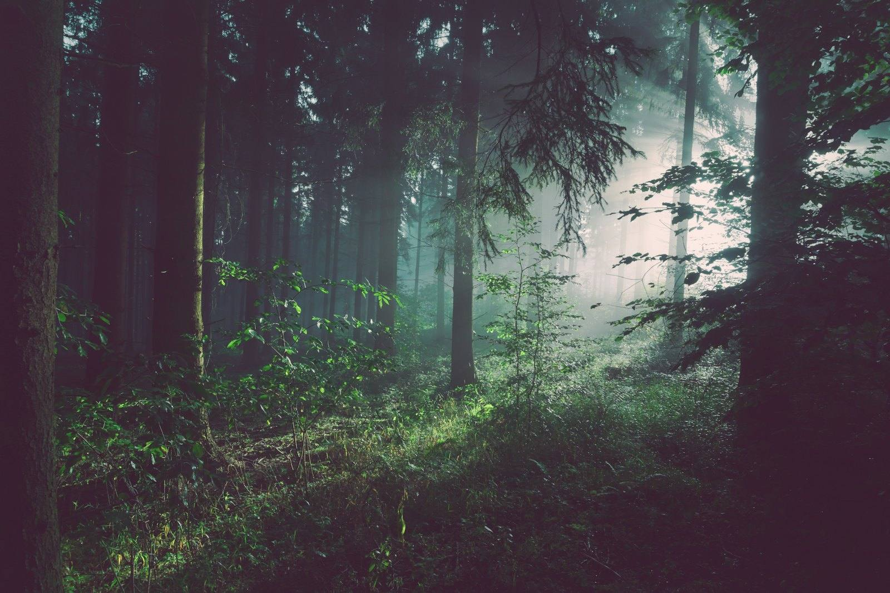
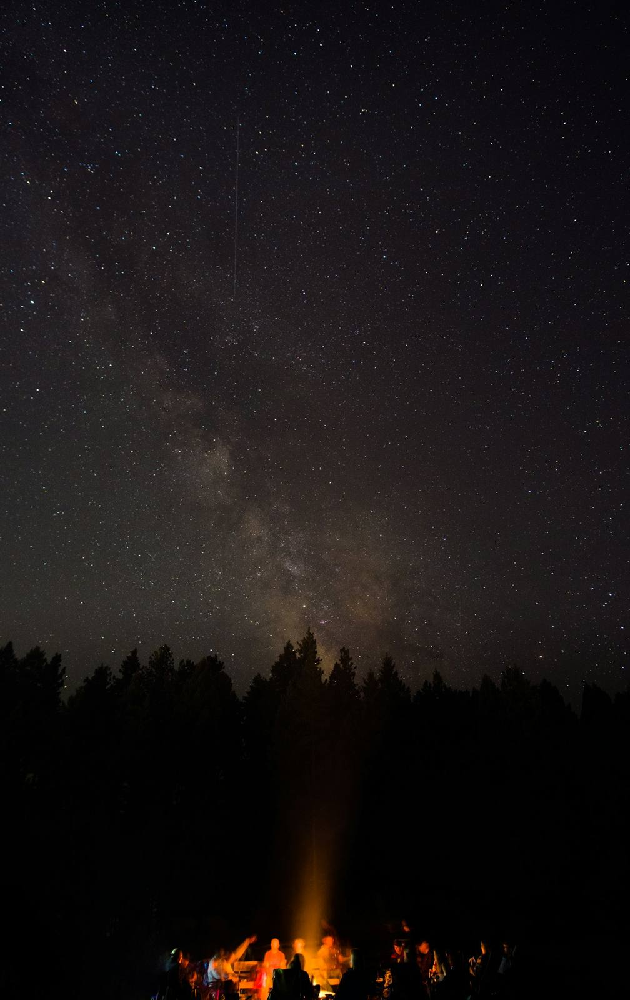

Expeditie Wildernis
Vaardigheden en competentie. Het vlaggenschip.

Programma's
Elk programma heeft dezelfde pedagogische ruggengraat. Het thema eromheen, piraten, spionnen of tovenaars, is een jas die je kunt wisselen. Standaard van binnen, maatwerk van buiten.
Risico zegt welke van de zes risicocategorieën erin zitten, niet hoe gevaarlijk het is. Daarover meer op de pagina veiligheid.
Vaardigheden en competentie. Het vlaggenschip.
Risicocompetentie en focus, rond vuur.
Strategie en sportiviteit.
Waarnemen en impulscontrole.
Natuurkennis en zorg.
Samenwerken en reflectie.
Strategisch denken.
Emotieregulatie en durf. Korter, omdat spanning energie kost.
Techniek en eigenaarschap. Het bouwen is het hoofdblok.
Logica en verhaal. Werkt ook bij slecht weer.
Expeditie Wildernis is een werktitel uit de tijd dat Klein Wild nog Wildernis heette. [Definitieve naam volgt]

Leerlijnen
Expeditie Wildernis leidt naar De Vuurmeesters, De Woudlopers naar De Nachtwacht. De twee winterprogramma's vullen de maanden waarin de meeste buitenaanbieders stilliggen.
Voor een eerste kennismaking raad ik Expeditie Wildernis, Het Belegerde Kasteel of Het Verdwenen Bosgeheim aan.